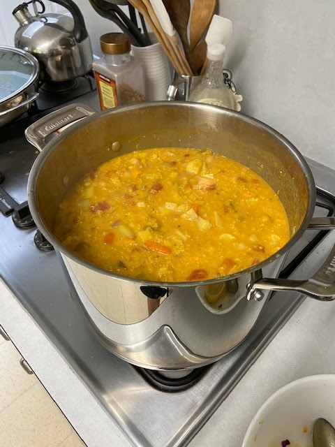

One of our favorite restaurants, Cafe Sprout, has a spicy red curry soup that we love – with chickpeas, tomatoes, carrots, celery, onion, red lentils, and quinoa. Isa also has a Sweet Potato and Red Curry Soup that looks good. So I made up a recipe that pulls from both. Larry said it was fantastic! (Originally posted September 2015; updated February 2020 to be even better :)

Ingredients
- 1T canola oil
- 1 small hot pepper (like serrano), diced
- 1 medium onion, chopped
- 3 stalks celery, chopped
- 3 medium carrots, chopped
- 1 medium potato, chopped
- 2-3 cups cauliflower, chopped
- 1 can diced tomatoes (or 2 cans if big batch)
- 6 cups vegetable broth
- 1 lb (16 oz) dried red lentils, washed
- 1/2 C quinoa (dry, uncooked)
- 1 can or 2 cups chickpeas, cooked
- 1/2 to 1 can lite coconut milk

3T fresh lime juice - Spices:
- 2 tsp cumin seeds (or ground & add w/other spices)
- 3 cloves garlic, minced
- 1 T fresh ginger, minced
- 1 T curry powder
- 2 tsp turmeric
- 1 tsp coriander
- 1 tsp salt
- fresh ground pepper to taste
{kind=link}
Instructions
Saute cumin seeds and diced pepper in canola oil for 30 seconds. Add chopped onion, carrots, celery, and potatoes, and saute for 5 minutes or so, until onions are translucent. Add the rest of the spices and stir 1 minute. Add tomatoes, broth, dry red lentils, and dry quinoa. Bring to a boil. Lower heat, add cooked chickpeas, and simmer 20 minutes. Add coconut milk and lime juice. Serve.
{kind=link}
yum!
How it looks if you add potatoes but no quinoa or coconut milk:
{kind=link}